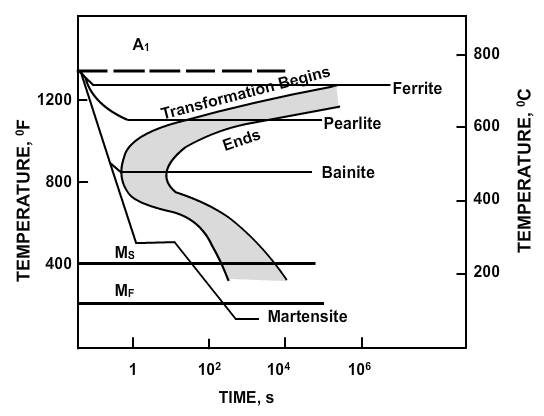

Time-Temperature Transformation (TTT) Diagram
The time-temperature transformation (TTT) curves correspond to the start and finish of transformations,
which
extend into the range of temperatures where austenite transforms to pearlite. Above 550°C, austenite
transforms completely to pearlite. Below 550°C, both pearlite and bainite are formed and below 450°C,
only
bainite is formed. The horizontal lines that run between the two curves, as shown in Figure 6.2, marks
the
beginning and end of isothermal transformations. The TTT diagrams provide a good starting point for an
examination of hardenability, but as they are statements of the kinetics of transformation of austenite
carried out isothermally, they can only be rough guides. To take an example, the TTT diagrams for a
0.4%C
0.2% Mo steel and steel with 0.3%C 2% Mo show that the 0.2% Mo steel begins to transform in about one
second
at 550°C, but on increasing the molybdenum to 2%, the whole C-curve is raised and the reaction slowed
substantially so that the nose is above 700°C, the reaction starting after four minutes. The latter
steel
will clearly have a greatly enhanced hardenability over that of the 0.2 Mo steel.

Definition of Heat Treatments
Heat treatment is the controlled heating and cooling of metals to modify their physical and mechanical
properties without changing the shape of the product. Heat treatment is sometimes done unintentionally
due to manufacturing processes that either heat or cool the metal such as welding or forming.
Heat treatment is associated normally with increasing the strength of material, but it can also be used
to alter certain objectives, such as, improve machining, improve formability, and restore ductility
after a cold working operation. Thus, it is a very useful manufacturing process that not only helps
other manufacturing processes, but also improves the product performance by increasing strength or other
desirable characteristics. Steels are particularly suitable for heat treatment, since they respond well
to heat treatment and the commercial use of steels exceeds that of any other material. In the following
sections, different aspects of heat treatment of steel are dealt with. Steels are heat treated for one
of the following reasons:
- softening,
- hardening, and
- materials modifications
Softening
Softening is done to reduce strength or hardness, remove residual stresses, improve toughness, restore
ductility, refine grain size or change the electromagnetic properties of steel.
Restoring ductility or removing residual stresses is a necessary operation when a large amount of cold
working is to be performed, such as in a cold-rolling operation or wiredrawing. Annealing (full,
process, spheroidising, normalising) and tempering (austempering, martempering) are the principal ways
by which steel is softened.
Hardening
Hardening of steel is done to improve the strength and wear properties. One of the pre-requisites for
hardening is sufficient carbon and alloy content. If there is sufficient carbon content, then the steel
can directly be hardened. Otherwise, the surface of the part has to be carbon enriched using some
hardening techniques employing diffusion treatments. The ability to be hardened varies with the carbon
and alloy content of steel. The higher the carbon content, the harder the steel can become. Low carbon
steel has very low hardenability and wrought iron, which has no carbon, is unhardenable. To harden
steel, it is heated above the "transformation point", a low red or just above where the steel becomes
non-magnetic. Then it is quenched in brine, water, oil or even air. Afterwards, it is tempered by
reheating. Hardenability is a measure of the depth to which steel will harden when quenched from its
austenitizing temperature. In the Jominy end-quench test, the depth of hardening is the distance along
the specimen from the quenched end which correlates to a given hardness level.
Critical Cooling Rate
The critical cooling rate is defined as the slowest rate of cooling from the hardening temperature, which
will produce the fully hardened martensitic condition.
Material Modification
Heat treatment is used to change properties of materials in addition to hardening and softening. These
processes modify the behaviour of steels in a beneficial manner to maximize service life (for example,
stress relieving) or strength properties (for example, cryogenic treatment) or some other desirable
properties (for example, spring aging).
Common Heat Treatments for Steels
Full Annealing
Full annealing is the process of slowly raising the temperature about 50°C above the austenitic
temperature line A3 or line ACM in the case of hypo-eutectoid steels (steels with < 0.77% carbon) and
50°C into the austenite-cementite region in the case of hyper-eutectoid steels (steels with> 0.77%
carbon) (Figure 6.3).
It is held at this temperature for sufficient time for all the material to transform into austenite or
austenite cementite as the case may be. It is then slowly cooled at the rate of about 20°C/h in a
furnace to about 50°C into the ferrite-cementite range. At this point, it can be cooled in room
temperature air with natural convection. The grain structure has coarse pearlite with ferrite or
cementite (depending on whether hypo- or hyper-eutectoid). The steel becomes soft and ductile.
Normalizing
Normalizing is the process of raising the temperature to over 60°C, above line A3 or line ACM fully into
the austenite range (Figure 6.4). It is held at this temperature to fully convert the structure into
austenite, and then removed form the furnace and cooled at room temperature under natural convection.
This results in a grain structure of fine pearlite with excess of ferrite or cementite. The resulting
material is soft; the degree of softness depends on the actual ambient conditions of cooling. This
process is considerably cheaper than full annealing since there is not the added cost of controlled
furnace cooling. The main difference between the full annealing and the normalizing is that fully
annealed parts are uniform in softness (and machinabililty) throughout the entire part; since the entire
part is exposed to the controlled furnace cooling. In the case of the normalized part, depending on the
part geometry, the cooling is non-uniform resulting in non-uniform material properties across the part.
This may not be desirable if further machining is desired, since it makes the machining job somewhat
unpredictable. In such a case, it is better to do full annealing.